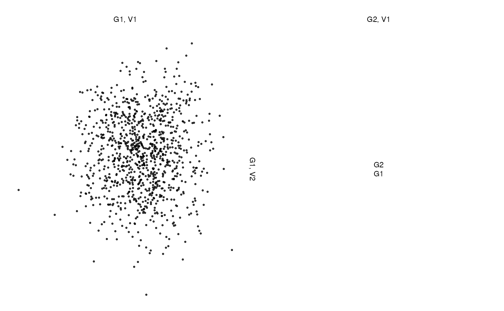
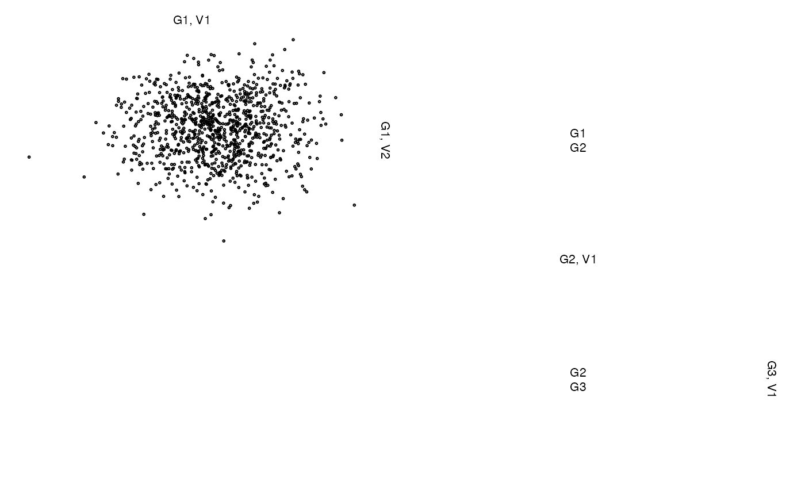
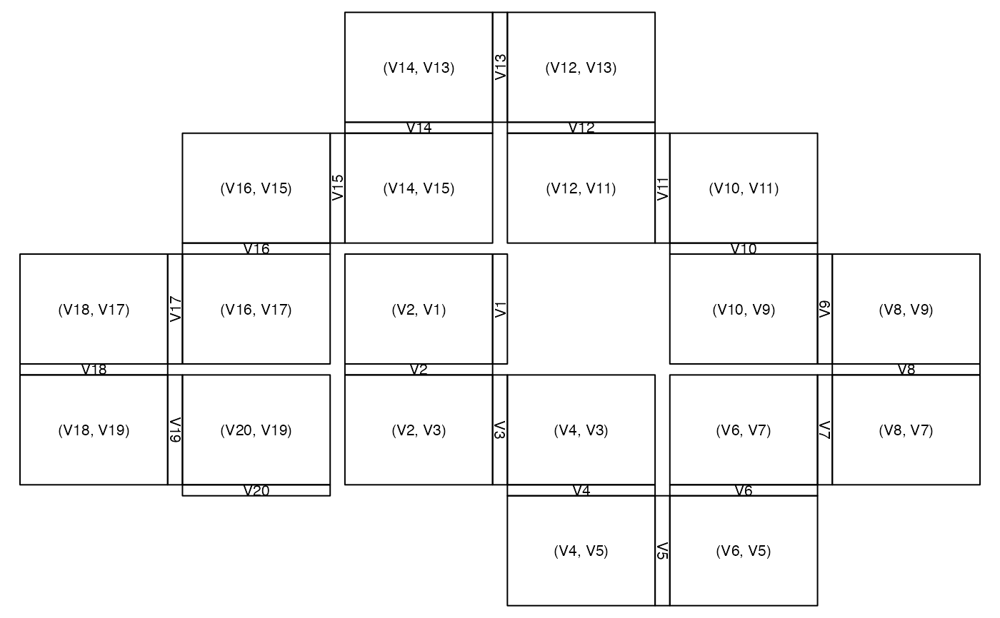
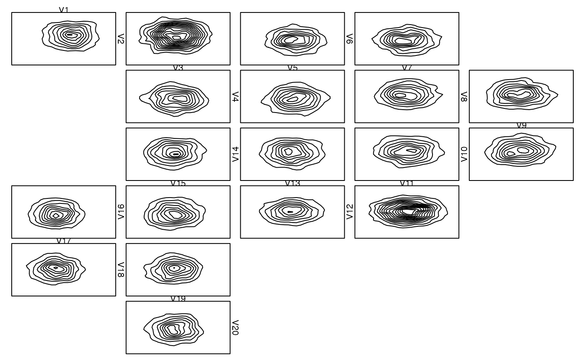
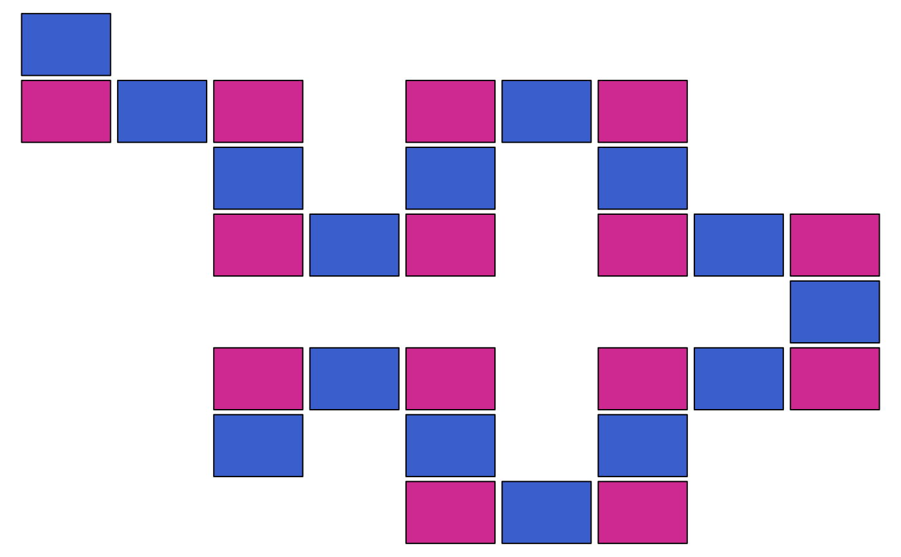
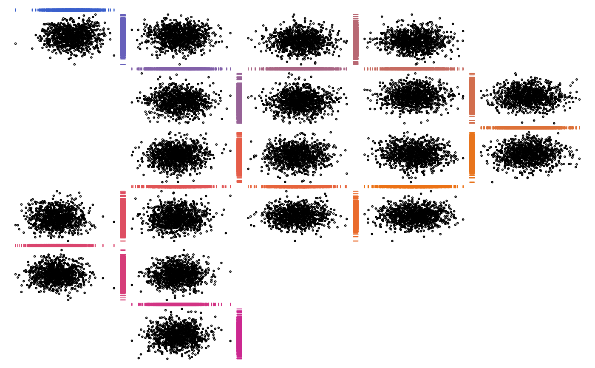
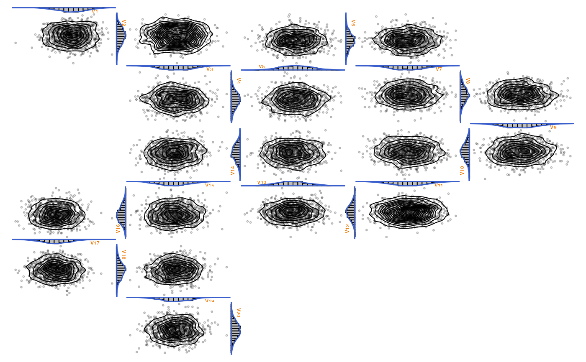
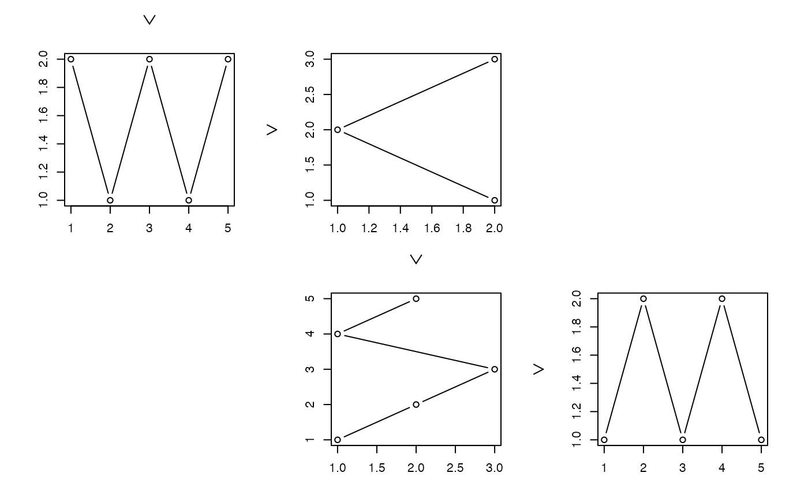

Main function to create a zenplot
zenplot.RdConstructs and draws a zigzag expanded navigation plot for a graphical exploratory analysis of a path of variables. The result is an alternating sequence of one-dimensional (1d) and two-dimensional (2d) plots laid out in a zigzag-like structure so that each consecutive pair of 2d plots has one of its variates (or coordinates) in common with that of the 1d plot appearing between them.
zenplot(x, turns = NULL, first1d = TRUE, last1d = TRUE, n2dcols = c("letter", "square", "A4", "golden", "legal"), n2dplots = NULL, plot1d = c("label", "points", "jitter", "density", "boxplot", "hist", "rug", "arrow", "rect", "lines", "layout"), plot2d = c("points", "density", "axes", "label", "arrow", "rect", "layout"), zargs = c(x = TRUE, turns = TRUE, orientations = TRUE, vars = TRUE, num = TRUE, lim = TRUE, labs = TRUE, width1d = TRUE, width2d = TRUE, ispace = match.arg(pkg) != "graphics"), lim = c("individual", "groupwise", "global"), labs = list(group = "G", var = "V", sep = ", ", group2d = FALSE), pkg = c("graphics", "grid", "loon"), method = c("tidy", "double.zigzag", "single.zigzag", "rectangular"), width1d = if(is.null(plot1d)) 0.5 else 1, width2d = 10, ospace = if(pkg == "loon") 0 else 0.02, ispace = if(pkg == "graphics") 0 else 0.037, draw = TRUE, ...)
Arguments
| x | A data object of "standard forms", being a |
|---|---|
| turns | A |
| first1d | A |
| last1d | A |
| n2dcols | number of columns of 2d plots (\(\ge 1\))
or one of |
| n2dplots | The number of 2d plots. |
| plot1d | A If |
| plot2d | A As for |
| zargs | A fully named
|
| lim | (x-/y-)axis limits. This can be a If |
| labs | The plot labels to be used; see the argument |
| pkg | The R package used for plotting (depends on how the
functions |
| method | The type of zigzag plot (a Available are:
Note that |
| width1d | A graphical parameter > 0 giving the width of 1d plots. |
| width2d | A graphical parameter > 0 giving the height of 2d plots. |
| ospace | The outer space around the zenplot. A vector of length four (bottom, left, top, right), or one whose values are repeated to be of length four, which gives the outer space between the device region and the inner plot region around the zenplot. Values should be in \([0,1]\) when |
| ispace | The inner space in \([0,1]\) between the each figure region and the region of the (1d/2d) plot it contains. Again, a vector of length four (bottom, left, top, right) or a shorter one whose values are repeated to produce a vector of length four. |
| draw | A |
| ... | arguments passed to the drawing functions for both |
Value
(besides plotting) invisibly returns a list containing at least
the path and layout (see unfold for details).
Depending on the graphics package pkg used, the returned list
includes additional components. For pkg = "grid",
this will be the whole plot as a grob (grid object).
For pkg = "loon", this will be the whole plot as a
loon plot object as
well as the toplevel tk object in which the plot appears.
See also
All provided default plot1d and plot2d functions.
extract_1d() and extract_2d()
for how zargs can be split up into a list of columns and corresponding
group and variable information.
burst() for how x can be split up into all sorts of
information useful for plotting (see our default plot1d and plot2d).
vport() for how to construct a viewport for
(our default) grid (plot1d and plot2d) functions.
extract_pairs(), connect_pairs(),
group() and zenpath() for
(zen)path-related functions.
The various vignettes for additional examples.
Other creating zenplots: unfold
Examples
### Basics ##################################################################### ## Generate some data n <- 1000 # sample size d <- 20 # dimension set.seed(271) # set seed (for reproducibility) x <- matrix(rnorm(n * d), ncol = d) # i.i.d. N(0,1) data ## A basic zenplot res <- zenplot(x)stopifnot(identical(res, unfold(nfaces = d - 1))) ## => The return value of zenplot() is the underlying unfold() ## Some missing data z <- x z[seq_len(n-10), 5] <- NA # all NA except 10 points zenplot(z)## Another column with fully missing data (use arrows) ## Note: This could be more 'compactified', but is technically ## more involved z[, 6] <- NA # all NA zenplot(z)## Lists of vectors, matrices and data frames as arguments (=> groups of data) ## Only two vectors z <- list(x[,1], x[,2]) zenplot(z)## Without labels or with different labels z <- list(A = x[,1:2], B = cbind(NA, NA), C = x[,3]) zenplot(z, labs = NULL) # without any labels## Example with a factor zenplot(iris)zenplot(iris, lim = "global") # global scaling of axiszenplot(iris, lim = "groupwise") # acts as 'global' here (no groups in the data) ### More sophisticated examples ################################################ ## Note: The third component (data.frame) naturally has default labels. ## zenplot() uses these labels and prepends a default group label. z <- list(x[,1:5], x[1:10, 6:7], NA, data.frame(x[seq_len(round(n/5)), 8:19]), cbind(NA, NA), x[1:10, 20]) zenplot(z, labs = list(group = "Group ")) # change the group label (var and sep are defaults)## Alternatively, give z labels names(z) <- paste("Group", LETTERS[seq_len(length(z))]) # give group names zenplot(z) # uses given group names## Now let's change the variable labels z. <- lapply(z, function(z.) { if(!is.matrix(z.)) z. <- as.matrix(z.) colnames(z.) <- paste("Var.", seq_len(ncol(z.))) z. } ) zenplot(z.)### A dynamic plot based on 'loon' (if installed and R compiled with tcl support)### Providing your own turns ################################################### ## A basic example turns <- c("l","d","d","r","r","d","d","r","r","u","u","r","r","u","u","l","l", "u","u","l","l","u","u","l","l","d","d","l","l","d","d","l","l", "d","d","r","r","d","d") zenplot(x, plot1d = "layout", plot2d = "layout", turns = turns) # layout of plot regions## => The tiles stick together as ispace = 0. zenplot(x, plot1d = "layout", plot2d = "layout", turns = turns, pkg = "grid") # layout of plot regions with grid## => Here the tiles show the small (default) ispace ## Another example (with own turns and groups) zenplot(list(x[,1:3], x[,4:7]), plot1d = "arrow", plot2d = "rect", turns = c("d", "r", "r", "r", "r", "d", "d", "l", "l", "l", "l", "l"), last1d = FALSE)### Providing your own plot1d() or plot2d() #################################### ## Creating a box zenplot(x, plot1d = "label", plot2d = function(zargs) density_2d_graphics(zargs, box = TRUE))## With gridzenplot(x, plot1d = "label", plot2d = function(zargs) density_2d_grid(zargs, box = TRUE), pkg = "grid")## An example with width1d = width2d and where no zargs are passed on. ## Note: This could have also been done with 'rect_2d_graphics(zargs, col = ...)' ## as plot1d and plot2d. myrect <- function(...) { plot(NA, type = "n", ann = FALSE, axes = FALSE, xlim = 0:1, ylim = 0:1) rect(xleft = 0, ybottom = 0, xright = 1, ytop = 1, ...) } zenplot(matrix(0, ncol = 15), n2dcol = "square", width1d = 10, width2d = 10, plot1d = function(...) myrect(col = "royalblue3"), plot2d = function(...) myrect(col = "maroon3"))## Colorized rugs as plot1d() basecol <- c("royalblue3", "darkorange2", "maroon3") palette <- colorRampPalette(basecol, space = "Lab") cols <- palette(d) # different color for each 1d plot zenplot(x, plot1d = function(zargs) { rug_1d_graphics(zargs, col = cols[(zargs$num+1)/2]) } )zenplot(x, pkg = "grid", # you are responsible for choosing the right pkg (cannot be tested!) plot1d = function(zargs) rug_1d_grid(zargs, col = cols[(zargs$num+1)/2]))## Rectangles with labels as plot2d() (shows how to overlay plots) ## With graphics ## Note: myplot2d() could be written directly in a simpler way, but is ## based on the two functions here to show how they can be combined. zenplot(x, plot1d = "arrow", plot2d = function(zargs) { rect_2d_graphics(zargs) label_2d_graphics(zargs, add = TRUE) })## With gridzenplot(x, pkg = "grid", plot1d = "arrow", plot2d = function(zargs) gTree(children = gList(rect_2d_grid(zargs), label_2d_grid(zargs))))## Rectangles with labels outside the 2d plotting region as plot2d() ## With graphics zenplot(x, plot1d = "arrow", plot2d = function(zargs) { rect_2d_graphics(zargs) label_2d_graphics(zargs, add = TRUE, xpd = NA, srt = 90, loc = c(1.04, 0), adj = c(0,1), cex = 0.7) })## With gridzenplot(x, pkg = "grid", plot1d = "arrow", plot2d = function(zargs) gTree(children = gList(rect_2d_grid(zargs), label_2d_grid(zargs, loc = c(1.04, 0), just = c("left", "top"), rot = 90, cex = 0.45))))## 2d density with points, 1d arrows and labels zenplot(x, plot1d = function(zargs) { rect_1d_graphics(zargs) arrow_1d_graphics(zargs, add = TRUE, loc = c(0.2, 0.5)) label_1d_graphics(zargs, add = TRUE, loc = c(0.8, 0.5)) }, plot2d = function(zargs) { points_2d_graphics(zargs, col = adjustcolor("black", alpha.f = 0.4)) density_2d_graphics(zargs, add = TRUE) })## 2d density with labels, 1d histogram with density and label ## Note: The 1d plots are *improper* overlays here as the density ## plot does not know the heights of the histogram. In other ## words, both histograms and densities use the whole 1d plot ## region but are not correct relative to each other in the ## sense of covering the same are. For a *proper* overlay ## see below. zenplot(x, plot1d = function(zargs) { hist_1d_graphics(zargs) density_1d_graphics(zargs, add = TRUE, border = "royalblue3", lwd = 1.4) label_1d_graphics(zargs, add = TRUE, loc = c(0.2, 0.8), cex = 0.6, font = 2, col = "darkorange2") }, plot2d = function(zargs) { density_2d_graphics(zargs) points_2d_graphics(zargs, add = TRUE, col = adjustcolor("black", alpha.f = 0.3)) } )### More sophisticated examples ################################################ ### Example: Overlaying histograms with densities (the *proper* way)## Define proper 1d plot for overlaying histograms with densities hist_with_density_1d <- function(zargs) { ## Extract information and data num <- zargs$num # plot number (among all 1d and 2d plots) turn.out <- zargs$turns[num] # turn out of current position horizontal <- turn.out == "d" || turn.out == "u" # the indices of the 'x' variable to be displayed in the current plot ii <- plot_indices(zargs) label <- paste0("V", ii[1]) # label srt <- if(horizontal) 0 else if(turn.out == "r") -90 else 90 # label rotation x <- zargs$x[,ii[1]] # data lim <- range(x) # data limits ## Compute histogram information breaks <- seq(from = lim[1], to = lim[2], length.out = 21) binInfo <- hist(x, breaks = breaks, plot = FALSE) binBoundaries <- binInfo$breaks widths <- diff(binBoundaries) heights <- binInfo$density ## Compute density information dens <- density(x) xvals <- dens$x keepers <- (min(x) <= xvals) & (xvals <= max(x)) # keep those within the range of the data x. <- xvals[keepers] y. <- dens$y[keepers] ## Determine plot limits and data if(turn.out == "d" || turn.out == "l") { # flip density/histogram heights <- -heights y. <- -y. } if(horizontal) { xlim <- lim xlim.bp <- xlim - xlim[1] # special for barplot(); need to shift the bars ylim <- range(0, heights, y.) ylim.bp <- ylim x <- c(xlim[1], x., xlim[2]) - xlim[1] # shift due to plot region set up by barplot() y <- c(0, y., 0) } else { xlim <- range(0, heights, y.) xlim.bp <- xlim ylim <- lim ylim.bp <- ylim - ylim[1] # special for barplot(); need to shift the bars x <- c(0, y., 0) y <- c(xlim[1], x., xlim[2]) - ylim[1] # shift due to plot region set up by barplot() } ## Determining label position relative to the zenpath loc <- c(0.1, 0.6) # when walking downwards, change both left/right and up/down if(turn.out == "d") loc <- 1-loc # when walking to the right, coordinates change and 2nd is flipped if(turn.out == "r") { loc <- rev(loc) loc[2] <- 1-loc[2] } # when walking to the left, coordinates change and 1st is flipped if(turn.out == "l") { loc <- rev(loc) loc[1] <- 1-loc[1] } ## Plotting barplot(heights, width = widths, xlim = xlim.bp, ylim = ylim.bp, space = 0, horiz = !horizontal, main = "", xlab = "", axes = FALSE) # histogram polygon(x = x, y = y, border = "royalblue3", lwd = 1.4) # density opar <- par(usr = c(0, 1, 0, 1)) # switch to relative coordinates for text on.exit(par(opar)) text(x = loc[1], y = loc[2], labels = label, cex = 0.7, srt = srt, font = 2, col = "darkorange2") # label } ## Zenplot zenplot(x, plot1d = "hist_with_density_1d", plot2d = function(zargs) { density_2d_graphics(zargs) points_2d_graphics(zargs, add = TRUE, col = adjustcolor("black", alpha.f = 0.3)) } )#> Error in zenplot(x, plot1d = "hist_with_density_1d", plot2d = function(zargs) { density_2d_graphics(zargs) points_2d_graphics(zargs, add = TRUE, col = adjustcolor("black", alpha.f = 0.3))}): Function provided as argument 'plot1d' does not exist.### Example: A path through pairs of a grouped t copula sample## 1) Build a random sample from a 17-dimensional grouped t copula d. <- c(8, 5, 4) # sector dimensions d <- sum(d.) # total dimension nu <- rep(c(12, 1, 0.25), times = d.) # d.o.f. for each dimension n <- 500 # sample size set.seed(271) Z <- matrix(rnorm(n * d), ncol = n) # (d,n)-matrix P <- matrix(0.5, nrow = d, ncol = d) diag(P) <- 1 L <- t(chol(P)) # L: LL^T = P Y <- t(L \%*\% Z) # (n,d)-matrix containing n d-vectors following N(0,P) U. <- runif(n) W <- sapply(nu, function(nu.) 1/qgamma(U., shape = nu./2, rate = nu./2)) # (n,d)-matrix X <- sqrt(W) * Y # (n,d)-matrix U <- sapply(1:d, function(j) pt(X[,j], df = nu[j])) # (n,d)-matrix ## 2) Plot the data with a pairs plot, colorizing the groups cols <- matrix("black", nrow = d, ncol = d) # colors start <- c(1, cumsum(head(d., n = -1))+1) # block start indices end <- cumsum(d.) # block end indices for(j in seq_along(d.)) cols[start[j]:end[j], start[j]:end[j]] <- basecol[j] # colors diag(cols) <- NA # remove colors corresponding to diagonal entries cols <- as.vector(cols) # convert to a vector cols <- cols[!is.na(cols)] # remove NA entries corresponding to diagonal count <- 0 # panel number my_panel <- function(x, y, ...) # panel function for colorizing groups { count <<- count + 1; points(x, y, pch = ".", col = cols[count]) } pairs(U, panel = my_panel, gap = 0, labels = as.expression( sapply(1:d, function(j) bquote(italic(U[.(j)]))) )) ## 3) Zenplot of a random path through all pairs, colorizing the respective group ## Define our own points_2d_grid() for colorizing the groups my_points_2d_grid <- function(zargs, basecol, d.) { r <- extract_2d(zargs) # extract information from zargs x <- r$x y <- r$y xlim <- r$xlim ylim <- r$ylim num2d <- zargs$num/2 vars <- as.numeric(r$vlabs[num2d:(num2d+1)]) # two variables to be plotted ## Alternatively, we could have used ord[r$vars[num2d:(num2d+1)]] with ## the order 'ord' (see below) being passed to my_points_2d_grid() col <- if(all(1 <= vars & vars <= d.[1])) { basecol[1] } else { if(all(d.[1]+1 <= vars & vars <= d.[1]+d.[2])) { basecol[2] } else { if(all(d.[1]+d.[2]+1 <= vars & vars <= d)) basecol[3] else "black" } } # determine the colors vp <- vport(zargs$ispace, xlim = xlim, ylim = ylim, x = x, y = y) # viewport pointsGrob(x = x, y = y, pch = 21, size = unit(0.02, units = "npc"), name = "points_2d", gp = gpar(col = col), vp = vp) } ## Plot a random permutation of columns via a zenplot ## Note: We set column labels here, as otherwise the labels can only ## show *indices* of the variables to be plotted, i.e., the column ## number in U[,ord], and not the original column number in U (which ## is what we want to see in order to see how our 'path' through ## the pairs of variables looks like). colnames(U) <- 1:d set.seed(1) (ord <- sample(1:d, size = d)) # path; 1:d would walk parallel to the secondary diagonal zenplot(U[,ord], plot1d = "layout", plot2d = "layout", pkg = "grid") # layout zenplot(U[,ord], # has correct variable names as column names pkg = "grid", plot1d = function(zargs) arrow_1d_grid(zargs, col = "grey50"), plot2d = function(zargs) gTree(children = gList( my_points_2d_grid(zargs, basecol = basecol, d. = d.), rect_2d_grid(zargs, width = 1.05, height = 1.05, col = "grey50", lty = 3), label_2d_grid(zargs, loc = c(1.06, -0.03), just = c("left", "top"), rot = 90, cex = 0.45, fontface = "bold") ))) ## => The points are colorized correctly (compare with the pairs plot).#> Error: <text>:11:10: unexpected input #> 10: L <- t(chol(P)) # L: LL^T = P #> 11: Y <- t(L \ #> ^### Using ggplot2 ############################################################## ## Although not thoroughly tested, in principle ggplot2 can also be used via ## pkg = "grid" as follows.library(ggplot2)#> Warning: package ‘ggplot2’ was built under R version 3.5.2## Define our own 2d plot my_points_2d_ggplot <- function(zargs, extract2d = TRUE) { if(extract2d) { r <- extract_2d(zargs) # extract results from zargs df <- data.frame(r$x, r$y) # data frame names(df) <- c("x", "y") cols <- zargs$x[,"Species"] } else { ii <- plot_indices(zargs) # the indices of the variables to be plotted irs <- zargs$x # iris data df <- data.frame(x = irs[,ii[1]], y = irs[,ii[2]]) # data frame cols <- irs[,"Species"] } num2d <- zargs$num/2 # plot number among all 2d plots p <- ggplot() + geom_point(data = df, aes(x = x, y = y, colour = cols), show.legend = num2d == 3) + labs(x = "", y = "") # 2d plot if(num2d == 3) p <- p + theme(legend.position = "bottom", # legend for last 2d plot legend.title = element_blank()) ggplot_gtable(ggplot_build(p)) # 2d plot as grob } ## Plotting iris. <- iris colnames(iris.) <- gsub("\\\\.", " ", x = colnames(iris)) # => nicer 1d labels zenplot(iris., n2dplots = 3, plot2d = "my_points_2d_ggplot", pkg = "grid")#> Error in zenplot(iris., n2dplots = 3, plot2d = "my_points_2d_ggplot", pkg = "grid"): Function provided as argument 'plot2d' does not exist.zenplot(iris., n2dplots = 3, plot2d = function(zargs) my_points_2d_ggplot(zargs, extract2d = FALSE), pkg = "grid")### Providing your own data structure ############################################ Danger zone: An example with a new data structure (here: a list of *lists*) ## Note: - In this case, we most likely need to provide both plot1d and plot2d ## (but not in this case here since arrow_1d_graphics() does not depend ## on the data structure) ## - Note that we still make use of zargs here. ## - Also note that the variables are not correctly aligned anymore: ## In the ggplot2 examples we guaranteed this by plot_indices(), ## but here we don't. This then still produces our layout but the ## x/y axis of adjacent plots might not be the same anymore. This is ## fine if only a certain order of the plots is of interest, but ## not a comparison between adjacent plots. z <- list(list(1:5, 2:1, 1:3), list(1:5, 1:2)) zenplot(z, n2dplots = 4, plot1d = "arrow", last1d = FALSE, plot2d = function(zargs, ...) { r <- unlist(zargs$x, recursive = FALSE) num2d <- zargs$num/2 # plot number among 2d plots x <- r[[num2d]] y <- r[[num2d + 1]] if(length(x) < length(y)) x <- rep(x, length.out = length(y)) else if(length(y) < length(x)) y <- rep(y, length.out = length(x)) plot(x, y, type = "b", xlab = "", ylab = "") }, ispace = c(0.2, 0.2, 0.1, 0.1))### Zenplots based on 3d lattice plots ##########################################> #>#> #> #>## Build a list of cloud() plots (trellis objects) ## Note: ## - 'grid' problem: Without print(), the below zenplot() may fail (e.g., ## in fresh R sessions) with: 'Error in UseMethod("depth") : ## no applicable method for 'depth' applied to an object of class "NULL"' ## - col = "black" inside scales is needed to make the ticks show mycloud <- function(x, num) { lim <- extendrange(0:1, f = 0.04) print(cloud(x[, 3] ~ x[, 1] * x[, 2], xlim = lim, ylim = lim, zlim = lim, xlab = substitute(U[i.], list(i. = num)), ylab = substitute(U[i.], list(i. = num + 1)), zlab = substitute(U[i.], list(i. = num + 2)), zoom = 1, scales = list(arrows = FALSE, col = "black"), col = "black", par.settings = list(standard.theme(color = FALSE), axis.line = list(col = "transparent"), clip = list(panel = "off")))) } plst.3d <- lapply(1:4, function(i) mycloud(x[,i:(i+2)], num = i)) # list of trellis objects## Preparing the zenplot num <- length(plst.3d) ncols <- 2 turns <- c(rep("r", 2*(ncols-1)), "d", "d", rep("l", 2*(ncols-1)), "d") plot2d <- function(zargs) { num2d <- (zargs$num+1)/2 vp <- vport(zargs$ispace, xlim = 0:1, ylim = 0:1) grob(p = zargs$x[[num2d]], vp = vp, cl = "lattice") # convert trellis to grid object ## Note: For further plots, Work with ## gTree(children = gList(grob(zargs$x[[num2d]], vp = vp, ## cl = "lattice"))) } ## Zenplot ## Note: We use a list of *plots* here already (not data) zenplot(plst.3d, turns = turns, n2dplots = num, pkg = "grid", first1d = FALSE, last1d = FALSE, plot1d = "arrow_1d_grid", plot2d = plot2d)